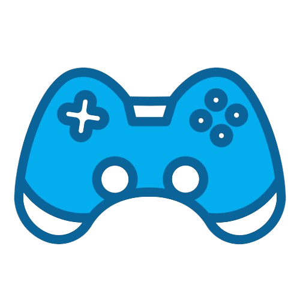

Welcome!
My name is Plesel David, and I started out with a love for mathematics and informatics before I found my way into one of my biggest passions: video game design.
I’ve always enjoyed the balance between analytical thinking and creative exploration. This blend of skills has led me to focus on designing systems that are fair and engaging.
I love learning new things and experimenting with ideas, whether in professional projects or personal ones, and I’m always eager to see where this journey will take me next.

Game Design

My approach to game design is all about merging my analytical background with my creative instincts. I believe that a well-designed game system should not only challenge players but also invite them to engage deeply and actively with the game world.
For me, the role of a game designer is like being at the crossroads of various disciplines—working closely with artists, writers, programmers, and others.
This horizontal connection across different fields is where I work to make the magic happens, as I get to bring all these elements together to craft a cohesive and engaging experience.
Pedagogy
I’m also deeply interested in how we learn, particularly through experiences.
I believe that games are a powerful way to teach and grow, offering players opportunities to learn in ways that are both enjoyable and impactful.
This passion for pedagogy influences my design work, as I aim to create games that not only entertain but also help players develop new skills and perspectives.
In the short run, games shape how people feel and experience things. But over time, people shape and own the games they play